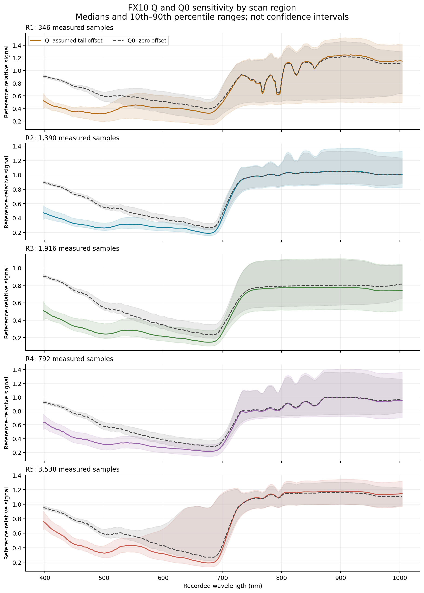
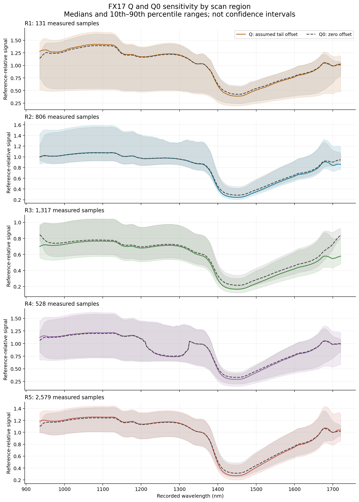
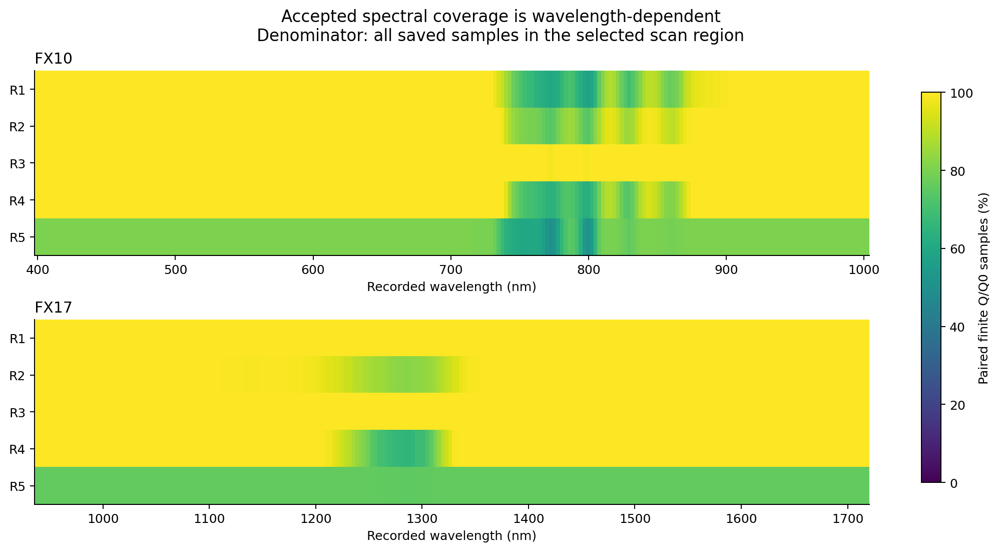
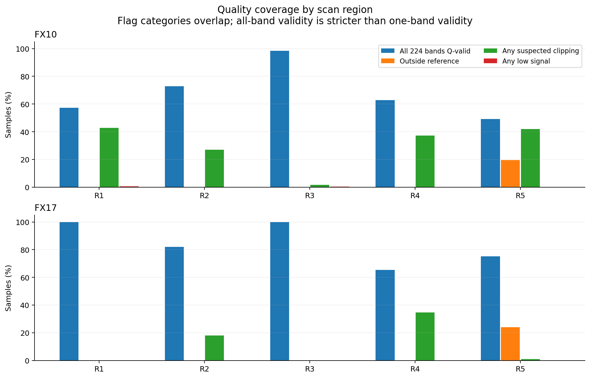
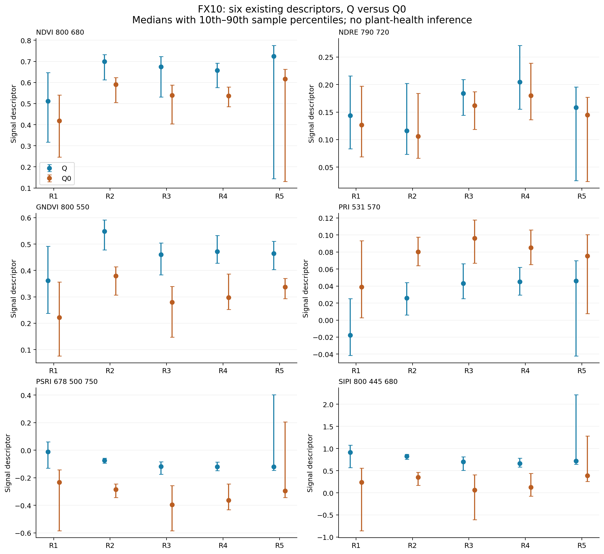
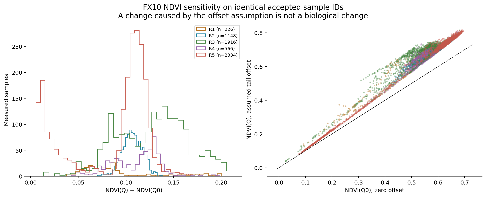
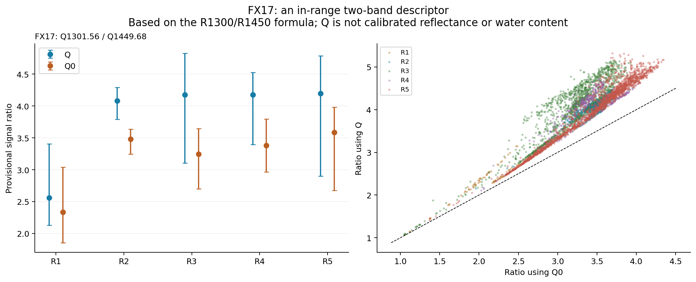

28 September capture · 7 October analysis · 13,343 existing measured samples × 224 bands per sensor. This audit covers all saved reviewed samples, not every raw scene pixel.
Q=(DN-D)/(W-D) uses an unconfirmed scan-tail offset. Q0=DN/W assumes zero offset. The board reflectance spectrum is unknown. These are reference-relative signals, not calibrated reflectance. R1–R5 are independently reviewed scan regions, not operator-confirmed 3D plant identities. Samples are spatially correlated; distribution ranges are not confidence intervals or biological replicates.
The newly confirmed checkerboard dimensions do not change these camera-space spectral calculations. Physical spatial registration and trait rescaling are separate deliverables.
Full JSON · Quality CSV · Every-band CSV · Six-index CSV · FX17 ratio CSV · FX17 per-sample CSV · FX17 per-sample NPZ · Methods and source
Flags overlap: a sample can be both outside reference coverage and suspected clipped. “All bands” requires all 224 Q values to be finite; a single index only needs its own required bands. Low-signal bands remain advisory for spectra but are excluded from descriptors. No missing value was filled.
| Camera | Region | Samples | Any Q | All 224 Q | Outside reference | Any suspected clipping | Any low signal |
|---|---|---|---|---|---|---|---|
| FX10 | R1 | 346 | 346 | 198 | 0 | 148 | 2 |
| FX10 | R2 | 1390 | 1390 | 1014 | 0 | 376 | 0 |
| FX10 | R3 | 1916 | 1916 | 1884 | 0 | 32 | 6 |
| FX10 | R4 | 792 | 792 | 497 | 0 | 295 | 0 |
| FX10 | R5 | 3538 | 2845 | 1742 | 693 | 1481 | 0 |
| FX17 | R1 | 131 | 131 | 131 | 0 | 0 | 0 |
| FX17 | R2 | 806 | 806 | 661 | 0 | 145 | 0 |
| FX17 | R3 | 1317 | 1317 | 1317 | 0 | 0 | 0 |
| FX17 | R4 | 528 | 528 | 345 | 0 | 183 | 0 |
| FX17 | R5 | 2579 | 1963 | 1941 | 616 | 22 | 0 |
Q assumes the final scan tail provides an offset; shutter closure was not confirmed. Q0 instead assumes zero offset. Both retain identical conservative spatial/reference support. Neither is ground truth. Every reported difference compares the same measured sample IDs. All ranges are empirical sample distributions, not confidence intervals.




NDVI, NDRE, GNDVI, PRI, PSRI and SIPI are computed only from FX10 recorded wavelengths and saved valid bands. Values are exploratory signal descriptors. The region names do not authorize five biological-plant health rankings, and the sample count does not provide independent biological replication.
| Region | Descriptor | Valid Q n | Valid Q0 n | Median Q | Median Q0 | Median paired difference |
|---|---|---|---|---|---|---|
| all_reviewed_regions | NDVI_800_680 | 6190 | 6190 | 0.68366 | 0.5585 | 0.10874 |
| all_reviewed_regions | NDRE_790_720 | 5999 | 5999 | 0.16543 | 0.14709 | 0.016527 |
| all_reviewed_regions | GNDVI_800_550 | 6190 | 6190 | 0.47253 | 0.32542 | 0.14992 |
| all_reviewed_regions | PRI_531_570 | 7289 | 7289 | 0.038604 | 0.082376 | -0.045322 |
| all_reviewed_regions | PSRI_678_500_750 | 5935 | 5935 | -0.10904 | -0.30903 | 0.2071 |
| all_reviewed_regions | SIPI_800_445_680 | 6190 | 6190 | 0.73341 | 0.3241 | 0.49119 |
| R1 | NDVI_800_680 | 226 | 226 | 0.51145 | 0.41894 | 0.080369 |
| R1 | NDRE_790_720 | 215 | 215 | 0.14384 | 0.12665 | 0.018115 |
| R1 | GNDVI_800_550 | 226 | 226 | 0.36167 | 0.22172 | 0.13544 |
| R1 | PRI_531_570 | 346 | 346 | -0.017808 | 0.0389 | -0.054403 |
| R1 | PSRI_678_500_750 | 234 | 234 | -0.012371 | -0.23295 | 0.23438 |
| R1 | SIPI_800_445_680 | 226 | 226 | 0.91645 | 0.23634 | 0.82336 |
| R2 | NDVI_800_680 | 1148 | 1148 | 0.69932 | 0.59051 | 0.10659 |
| R2 | NDRE_790_720 | 1096 | 1096 | 0.11617 | 0.10581 | 0.010937 |
| R2 | GNDVI_800_550 | 1148 | 1148 | 0.54807 | 0.37969 | 0.17131 |
| R2 | PRI_531_570 | 1390 | 1390 | 0.025824 | 0.080408 | -0.056267 |
| R2 | PSRI_678_500_750 | 1112 | 1112 | -0.073237 | -0.28561 | 0.21391 |
| R2 | SIPI_800_445_680 | 1148 | 1148 | 0.826 | 0.34772 | 0.48356 |
| R3 | NDVI_800_680 | 1916 | 1916 | 0.67381 | 0.53909 | 0.13143 |
| R3 | NDRE_790_720 | 1916 | 1916 | 0.184 | 0.16182 | 0.022834 |
| R3 | GNDVI_800_550 | 1916 | 1916 | 0.46011 | 0.28008 | 0.18856 |
| R3 | PRI_531_570 | 1916 | 1916 | 0.043208 | 0.096269 | -0.049425 |
| R3 | PSRI_678_500_750 | 1916 | 1916 | -0.1177 | -0.39618 | 0.27481 |
| R3 | SIPI_800_445_680 | 1916 | 1916 | 0.70392 | 0.06151 | 0.63639 |
| R4 | NDVI_800_680 | 566 | 566 | 0.65799 | 0.5364 | 0.11726 |
| R4 | NDRE_790_720 | 525 | 525 | 0.20468 | 0.17969 | 0.023098 |
| R4 | GNDVI_800_550 | 566 | 566 | 0.47172 | 0.29769 | 0.17598 |
| R4 | PRI_531_570 | 792 | 792 | 0.045056 | 0.085226 | -0.040324 |
| R4 | PSRI_678_500_750 | 559 | 559 | -0.12022 | -0.36303 | 0.24303 |
| R4 | SIPI_800_445_680 | 566 | 566 | 0.66301 | 0.12488 | 0.53719 |
| R5 | NDVI_800_680 | 2334 | 2334 | 0.72484 | 0.61623 | 0.10499 |
| R5 | NDRE_790_720 | 2247 | 2247 | 0.1583 | 0.14475 | 0.0133 |
| R5 | GNDVI_800_550 | 2334 | 2334 | 0.46489 | 0.33773 | 0.12333 |
| R5 | PRI_531_570 | 2845 | 2845 | 0.045944 | 0.075228 | -0.034543 |
| R5 | PSRI_678_500_750 | 2114 | 2114 | -0.11993 | -0.29577 | 0.18532 |
| R5 | SIPI_800_445_680 | 2334 | 2334 | 0.72003 | 0.3903 | 0.37325 |


The recorded FX17 range is 935.61–1720.23 nm. Standard NDVI, NDRE, GNDVI, PRI, PSRI and SIPI lack their required bands; WI900/970, NDWI860/1240 and MSI1600/820 are likewise unsupported. No visible band is borrowed from FX10.
Seelig et al. (2008) studied the reflected-light ratio R1300/R1450. The corresponding measured FX17 wavelengths are 1301.56 and 1449.68 nm (bands 105 and 147). Here we report Q1301.56/Q1449.68 and the Q0 counterpart only as provisional signal ratios. Unknown board reflectance, assumed offset and acquisition geometry prevent interpreting them as calibrated leaf-water indices or water content.
Both required bands must have clear quality flags; the denominator must exceed 0.01 Q units. This guard is exploratory, not a calibrated physical uncertainty. Rejected samples stay NaN in NPZ and blank in CSV.
| Region | Samples | Paired valid n | Median ratio Q | Median ratio Q0 | Median paired difference |
|---|---|---|---|---|---|
| all_reviewed_regions | 5361 | 4455 | 4.13 | 3.4148 | 0.63256 |
| R1 | 131 | 131 | 2.5586 | 2.3341 | 0.26336 |
| R2 | 806 | 679 | 4.0815 | 3.482 | 0.61333 |
| R3 | 1317 | 1317 | 4.1746 | 3.2461 | 0.90686 |
| R4 | 528 | 381 | 4.1752 | 3.3809 | 0.74152 |
| R5 | 2579 | 1947 | 4.1986 | 3.5851 | 0.58151 |

Saved measured-spectrum metadata and canonical raw-DN hashes passed validation. All Q and Q0 values were reproduced exactly from saved raw samples and reference profiles, including NaNs. Six FX10 descriptor arrays and quality masks were reproduced exactly. All input files were rehashed after analysis and remain unchanged. No source cloud, raw cube, extraction output or application code was edited.
Reliable physical interpretation still needs a documented panel spectrum, confirmed dark reference at matching settings, and suitable independent biological/reference measurements. Dense 3D assignment requires its own spatial model and visibility validation. The separate pixel-to-3D and per-plant coverage problem is not solved by these spectral summaries.